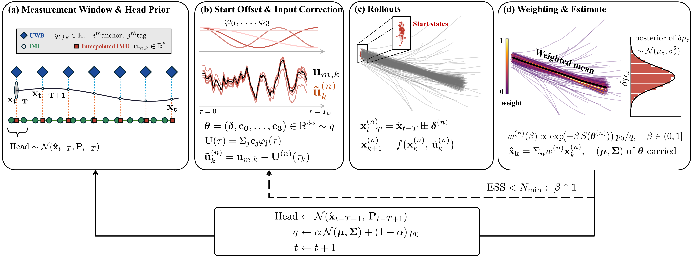
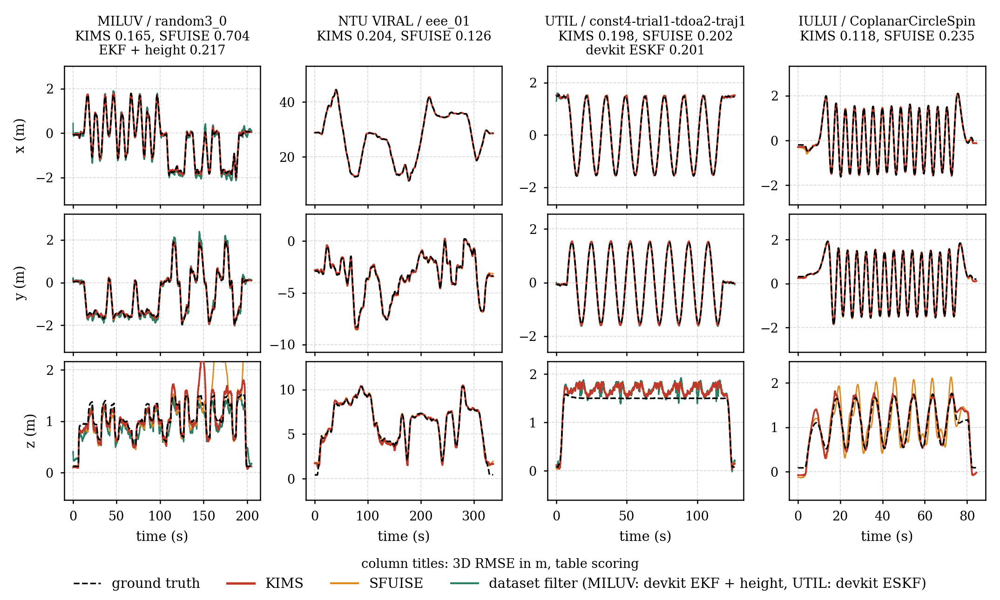
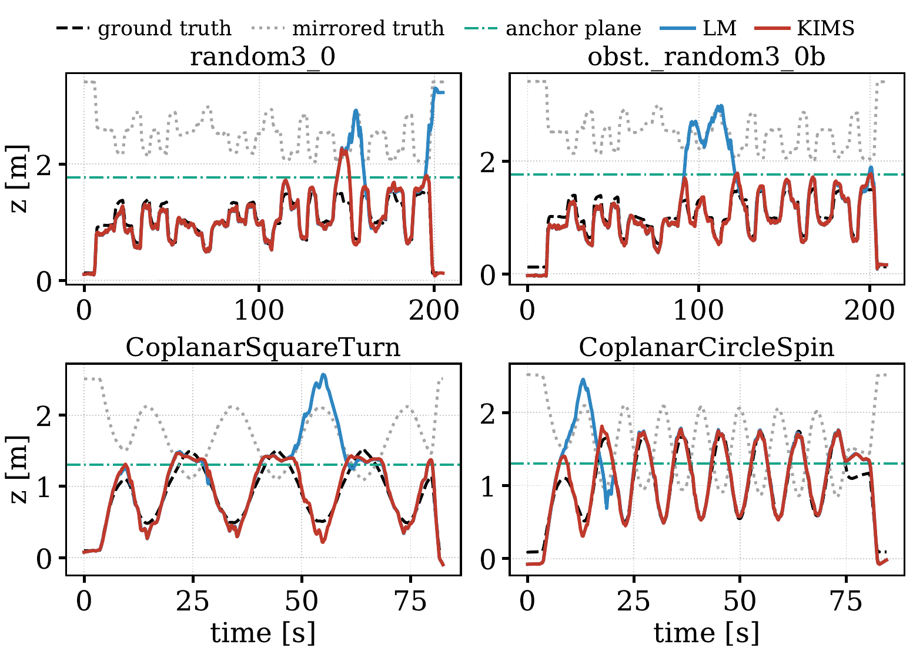
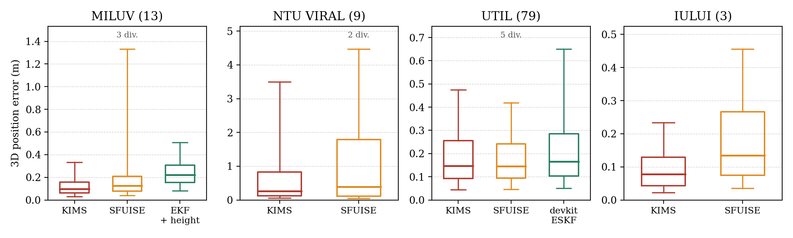
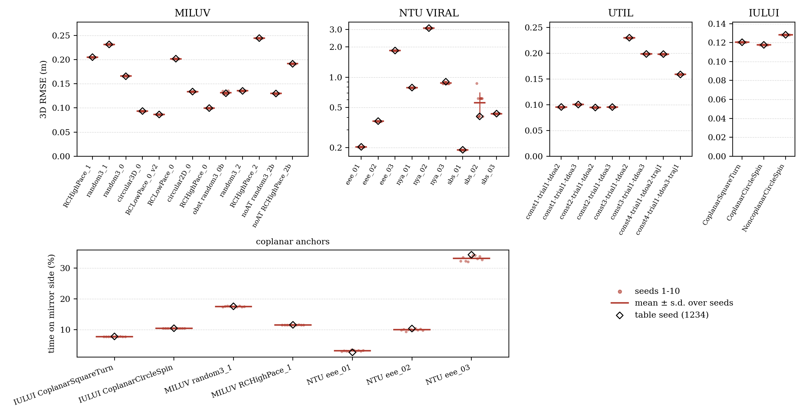
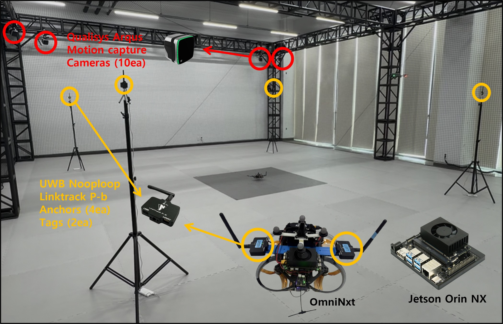
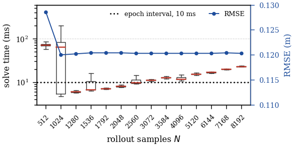

A fixed-lag smoother for UWB-IMU pose estimation that solves each window by sampling. Thousands of candidate trajectories are rolled through the IMU kinematics on a GPU and weighted by the range residuals, and the window posterior is carried forward by its moments. It needs UWB ranges, an IMU and the anchor positions.
The sampler on real footage. At every UWB epoch KIMS draws 8,192 window variables and rolls each one through the IMU kinematics over the 2 s window. 200 of them are projected into the arena camera and colored by importance weight; the dot is the lag-0 estimate. Each IULUI flight runs from 4 s before take-off to touchdown in real time, with the original sound. CoplanarSquareTurn
NTU VIRAL eee_01 — three coplanar anchors at 1.5 m, Leica ground truth
NTU VIRAL eee_02 — three coplanar anchors at 1.5 m, Leica ground truth
MILUV remoteControlLowPace_0_v2 — six anchors, Vicon ground truth
MILUV random3_0 — six anchors, Vicon ground truth
UTIL const4-trial1-tdoa2-traj1 — single tag, TDOA to eight anchors, Vicon ground truth
IULUI NoncoplanarCircleSpin — our campaign, anchors spread 0.24–2.20 m, Qualisys ground truth
Red is the committed KIMS estimate, 2 to 3 s behind the newest measurement, from UWB ranges and IMU only. Dashed is the ground truth. The teal grid marks the mean anchor height. On NTU VIRAL the three anchors are exactly coplanar and every flight crosses their plane at take-off and landing.
UWB ranges do not drift, but two properties of UWB-IMU data make the posterior of a sliding window non-Gaussian. Range errors are heavy-tailed, with non-line-of-sight delays and per-link biases that persist for seconds, and anchors are usually mounted at similar heights, so near the anchor plane the ranges constrain the height above it only weakly. With exactly coplanar anchors the posterior can even split into two mirror-symmetric branches, the flip ambiguity of range-based localization. An estimator that carries each window into the next as a mode with its curvature describes such a posterior by one local fit, and near the plane by only the branch its iteration reached.
KIMS treats one window as a sampling problem in the form of model predictive path integral control. The sampled window variable has 33 dimensions whatever the window length: an offset of the window-start state (position, velocity, attitude) and four cosine coefficients per IMU channel that correct the measured input. Each sample is integrated through the IMU kinematics from the window head, so every candidate is a trajectory the IMU could have produced. With temperature one the optimal path distribution of MPPI is the posterior of this variable given the window's ranges. KIMS draws from a proposal carried over from the previous window, corrects for it in the importance weights, and tempers the range cost when the weights collapse. The estimate is the weighted mean of the rollouts. The weighted moments, moved by one epoch, become the next proposal, and the arrival prior of the new head is one Kalman step with the leaving epoch's measurements only, so no measurement is counted twice.

One solve over a window of T UWB epochs. (a) Ranges, the IMU input of every inter-epoch interval and the arrival prior of the head. (b) N window variables drawn from the proposal, each a start-state offset and a four-term cosine input correction. (c) Each rollout starts from the head offset by its sample and integrates its corrected input through the IMU kinematics. (d) Range cost and prior-to-proposal ratio give the importance weights, tempered when the effective sample size is low. Their moments form the estimate and the next proposal. Panels (b) to (d) show one CoplanarSquareTurn solve in mid-flight with every eighth rollout, colored by weight in (d).
Every rollout is an IMU integration with a smooth input correction. The sampled dimension is 33 whether the window holds 100 or 230 UWB epochs.
The weighted mean and covariance carry a posterior that splits near a coplanar anchor plane with the spread between its branches. A Levenberg–Marquardt solver of the same objective carries the mode and its curvature instead and, after a plane crossing, stays on the mirror branch for 10 to 13 % of the coplanar IULUI flights.
Code, the IULUI flights and scripts/reproduce.sh, which reruns all 104 sequences of MILUV,
NTU VIRAL, UTIL and IULUI. Offline, no ROS.
104 real flights from four datasets, UWB ranges and IMU only, one setting per dataset. KIMS, SFUISE (a continuous-time spline smoother, run with its authors' published configuration) and the filter released with each dataset are our runs on the same measurements. The metric is the 3D position RMSE of the committed estimate over the whole flight. KIMS values on MILUV, NTU VIRAL and IULUI are means over ten seeds per sequence.
rcHighPace flights KIMS stays at 0.10 to 0.24 m where
the height-sensor EKF reaches 1.3 to 1.4 m and SFUISE diverges on two.eee_03 and nya_02,
its two runs above 1 m, and for 21 to 23 % on nya_01 and nya_03, whose RMSE
stays at 0.79 and 0.88 m.A run counts as diverged when its RMSE exceeds 100 m and as failed when it exceeds 1 m. Across the 104 flights no KIMS run diverges and only two, both on NTU VIRAL, fail. SFUISE diverges on ten and fails on 16, and the dataset filters fail on 3 of 92. The matched LM is never more accurate than KIMS by more than 1 cm and is less accurate on 14 of the 104. Per-sequence x/y/z plots and RMSE of all 104 sequences (PDF, 36 MB).
| Median 3D RMSE [m] | KIMS | Matched LM | SFUISE | Dataset filter |
|---|---|---|---|---|
| MILUV (13) | 0.135 | 0.197 | 0.704 (3 div.) | 0.265 (EKF + height) |
| NTU VIRAL (9) | 0.559 | 0.633 | 2.537 (2 div.) | — |
| UTIL (79) | 0.187 | 0.191 | 0.184 (5 div.) | 0.217 (ESKF) |
| IULUI (3) | 0.120 | 0.418 | 0.235 | — |
Diverged runs (RMSE above 100 m) rank above every finite value in the medians. The MILUV filter is our run of the EKF released with the dataset, which uses IMU, UWB and a laser height sensor and starts from the ground-truth state. The UTIL filter is our run of the development-kit ESKF. Our runs reproduce the published values within 9 mm on MILUV and within 1 cm on most UTIL flights. The matched LM is the Levenberg–Marquardt optimizer of the same window objective, which carries each window as a mode with its curvature.
To find where the robustness of KIMS comes from, three estimators take its Tukey loss together with its window, range standard deviation, IMU noise densities, bias prior and start state, and differ from it only in enforcing the IMU kinematics as a penalty or in sampling the states instead of the window variable. SW-PGO is a sliding-window pose-graph optimization with a node per ranging epoch, the kinematics as penalties and one bias per window, solved by Ceres. SFUISE replaces its gate by the Tukey weight, and the bootstrap particle filter (PF) propagates 8,192 particles through the measured IMU, once with the process noise of the densities and once with ten times that noise.
| Median 3D RMSE [m] (diverged/failed) | MILUV (13) | NTU VIRAL (9) | UTIL (8) | IULUI (3) |
|---|---|---|---|---|
| KIMS | 0.135 (0/0) | 0.559 (0/2) | 0.130 (0/0) | 0.120 (0/0) |
| LM, same objective | 0.197 (0/0) | 0.633 (0/2) | 0.130 (0/0) | 0.418 (0/0) |
| SFUISE, 0.3 m gate | 0.704 (3/4) | 2.537 (2/6) | 0.125 (0/0) | 0.235 (0/0) |
| SFUISE + Tukey | 3.483 (0/10) | 7.607 (0/9) | 0.122 (0/0) | 0.242 (0/0) |
| SW-PGO + Tukey | 0.186 (2/2) | 0.494 (0/3) | 0.124 (0/0) | 0.404 (0/0) |
| SW-PGO, no robust loss | 0.625 (0/2) | 4.184 (0/9) | 0.124 (0/0) | 0.499 (0/0) |
| PF + Tukey | div. (13/13) | div. (9/9) | 0.197 (1/2) | div. (3/3) |
| PF + Tukey, 10× noise | div. (7/7) | 2.560 (3/6) | 0.132 (0/0) | 0.477 (0/0) |
UTIL here is the first trial of each constellation in both TDoA modes, eight flights. On UTIL, where no
flight nears a mirror configuration, every estimator except the PF with the process noise of the densities is
within 1 cm of KIMS, so there the robust loss alone suffices. On MILUV SW-PGO with the Tukey loss has the lowest
median after KIMS but diverges on two flights. On NTU VIRAL it has the lowest median of all, stays off the mirror
branch on nya_02, which KIMS and LM both follow, and fails on sbs_02 and
nya_03, where KIMS does not. Without the robust loss its medians rise on every dataset but UTIL,
but it no longer diverges, since a quadratic loss keeps pulling at any distance. SFUISE with the Tukey weight no
longer diverges but fails on 10 of the 13 MILUV flights and on every NTU VIRAL flight, because the ranges that
the gate rejected now bend the spline from inside the cut. Two conclusions follow. The window variable by itself
does not raise the accuracy, since LM, which optimizes it with the same loss, is not more accurate than SW-PGO in
median on any dataset, so the margin of KIMS over both comes from the sampling and the carried moments. The
window variable with its prior does keep the estimate on a path the IMU can explain, since neither KIMS nor LM
ever diverges, whereas an estimator over the states can drift further than the cut from the ranges, where the
bounded loss gives no pull and nothing brings it back, as the particle filter does on every flight.

One sequence per dataset, per axis: KIMS, SFUISE and our runs of the dataset filter against the ground
truth (MILUV random3_0, NTU VIRAL eee_01, UTIL const4-trial1-tdoa2-traj1,
IULUI CoplanarCircleSpin; column titles give the 3D RMSE).
The matched LM solver keeps everything else of KIMS, the window variable, prior, cost, GPU rollouts, proposal and window shift, and replaces the weighted samples by the mode of the same objective and its Laplace approximation. The two agree while the window posterior is a single Gaussian branch and differ when it splits near a coplanar anchor plane. The sample moments rank the branches by their mass and keep the spread between them, whereas the Laplace approximation describes only the branch the iteration reached, and since the carried summary becomes the next proposal, a recursion that has carried the lighter branch returns only when later measurements outweigh the carried curvature. Over the 104 sequences LM is never more accurate than KIMS by more than 1 cm and is less accurate by more than 1 cm on 14. Most of the gap sits on the four flights below, where LM is worse by 0.30 to 0.52 m, whereas on NTU VIRAL both solvers follow the mirror branch on the same sequences for about the same time. Solving the same windows from a common fixed prior isolates the cause. The head states of the two solvers then agree within 5.5 mm far from the plane and within 3 mm in median near it, where LM even reaches the lower objective, so the difference lies in what is carried to the next window.

Height of KIMS and LM over time on the four flights where they differ, with the ground truth (dashed), its reflection in the anchor plane (dotted) and the plane itself (dash-dot). After a crossing LM stays on the mirrored side, whereas KIMS returns to the true side.

Distribution of the per-sequence 3D RMSE on each dataset (box: quartiles, whiskers: range; diverged runs counted at the top).
The rollout count is studied in the computation section: accuracy is flat from N = 1,024 upward and the solve time grows with N.

Ten random seeds on 33 sequences. The RMSE spans 0.41 to 0.87 m on sbs_02 and
0.86 to 0.90 m on nya_03, where the seed decides the branch near the mirror, and stays within 7 mm
on the other 31. Bottom: share of time on the mirror side per seed on the coplanar flights.

The arena: an OmniNxt aerial robot with two Nooploop LinkTrack P-B UWB tags, an IMU and a Jetson Orin NX, four LinkTrack anchors on tripods, and ten Qualisys Arqus cameras for ground truth.
The repository ships IULUI, our own UWB-IMU flight campaign. Two tags range to four anchors at 800 ranges per second, the IMU runs at 50 Hz and Qualisys ground truth at 70 Hz. Raw ranges, IMU and ground truth come as CSV, with the anchor and tag geometry in JSON. Two anchor layouts were flown on the same 5.9 × 5.9 m square:
| Flight | Layout | Anchor heights | Plane crossings | Motion | Duration |
|---|---|---|---|---|---|
| CoplanarSquareTurn | AC1 | 1.30 m, coplanar within 8 mm | 6 | square with turns, about 0.5 m/s | 82 s |
| CoplanarCircleSpin | AC1 | 1.30 m, coplanar within 8 mm | 14 | circle at 2 m/s with continuous yaw spin | 84 s |
| NoncoplanarCircleSpin | AC3 | 0.24, 1.06, 1.42, 2.20 m | — | the same circle and spin | 84 s |
The AC1 flights cross the anchor plane again and again, exactly where the range likelihood of
coplanar anchors is symmetric about the plane. The AC3 flight repeats the CircleSpin maneuver under spread
anchors. A fourth AC1 flight, SquareBob, is in the repository but not evaluated in the paper.
In the data folder the flights are named SquareTurn, CircleSpin and
AC3_125000.
Solve time per epoch is measured on IULUI, whose 10 ms epoch interval is the shortest of the four datasets, one process at a time on a Jetson Orin NX (MAXN, clocks fixed) with FP32 rollouts and eight host threads.

Solve time per epoch on the Jetson Orin NX against the rollout count on CoplanarSquareTurn: boxes the quartiles, whiskers 1.5 interquartile ranges, dotted line the 10 ms epoch interval, right axis the RMSE of the same runs.
Rollout count. At N = 8,192 the median solve takes 22.8 ms. The RMSE is flat from N = 1,024 upward. Below that the first pass collapses on part of the solves and the tempering passes make the solve slower, not faster. From N = 1,280 to 2,560 the median stays under the epoch interval, 6.0 to 9.6 ms, at the same RMSE as N = 8,192. Real-time operation on the Jetson therefore means staying in that range of N, or shortening the window, since the window length sets the cost of every rollout.
Two latencies. The time above is what one solve costs. The estimation latency of fixed-lag smoothing is a separate matter: the committed state is the oldest one in the window, so it trails the newest measurement by the window length of 2 to 3 s. The newest state of the window is also available at every solve as a lag-0 output.
SFUISE runs with its authors' published configuration (10 Hz spline knots, 10 s sliding window, 0.3 m residual gate). It receives the unbinned ranges with the lever arm of every tag (the TDOA stream of the single tag on UTIL) and the IMU as configured in its release, estimates its own IMU biases, and its spline is evaluated at the body origin before scoring. The scored output is its last estimate of each state before that state leaves the window, about 10 s after its time. That lag does not explain its accuracy: read 0, 2 or 10 s after the measurement on eight UTIL flights it gives 0.139, 0.127 and 0.125 m, against 0.135 and 0.130 m for KIMS at lag 0 and 2 s.
Short-window test. With only its window shortened to that of KIMS (3 s on MILUV, 2 s elsewhere) and every other setting unchanged, SFUISE diverged on all 33 sequences we ran. With the residual gate widened from 0.3 to 1.5 m it tracked the three MILUV flights we retried at 3 to 13 times its 10 s error (0.868, 1.462 and 1.101 m against 0.123, 0.114 and 0.368 m), while the three NTU VIRAL sequences still diverged. In our setting, then, the short window degrades SFUISE and the published gate turns that degradation into divergence. The per-sequence results:
| Sequence | KIMS | SFUISE 10 s | SFUISE at the KIMS window | + 1.5 m gate |
|---|---|---|---|---|
| MILUV rcHighPace_1 | 0.205 | div. | div. | |
| MILUV random3_1 | 0.231 | 0.488 | div. | |
| MILUV random3_0 | 0.165 | 0.704 | div. | |
| MILUV circular3D_0 | 0.093 | 0.123 | div. | 0.868 |
| MILUV rcLowPace_0_v2 | 0.086 | 0.114 | div. | 1.462 |
| MILUV rcLowPace_0 | 0.202 | 0.955 | div. | |
| MILUV circular2D_0 | 0.134 | 0.192 | div. | |
| MILUV rcHighPace_0 | 0.100 | div. | div. | |
| MILUV obstacles_random3_0b | 0.130 | 0.639 | div. | |
| MILUV random3_2 | 0.135 | div. | div. | |
| MILUV rcHighPace_2 | 0.244 | 0.763 | div. | |
| MILUV noAT_random3_2b | 0.130 | 0.368 | div. | 1.101 |
| MILUV noAT_rcHighPace_2b | 0.191 | 1.144 | div. | |
| NTU VIRAL eee_01 | 0.204 | 0.126 | div. | div. |
| NTU VIRAL eee_02 | 0.367 | 2.537 | div. | |
| NTU VIRAL eee_03 | 1.845 | 1.144 | div. | |
| NTU VIRAL nya_01 | 0.791 | div. | div. | |
| NTU VIRAL nya_02 | 3.084 | 0.395 | div. | div. |
| NTU VIRAL nya_03 | 0.903 | div. | div. | |
| NTU VIRAL sbs_01 | 0.190 | 0.207 | div. | div. |
| NTU VIRAL sbs_02 | 0.409 | 3.109 | div. | |
| NTU VIRAL sbs_03 | 0.435 | 3.146 | div. | |
| UTIL const1-trial1-tdoa2 | 0.096 | 0.095 | div. | |
| UTIL const1-trial1-tdoa3 | 0.100 | 0.094 | div. | |
| UTIL const2-trial1-tdoa2 | 0.095 | 0.094 | div. | |
| UTIL const2-trial1-tdoa3 | 0.095 | 0.096 | div. | |
| UTIL const3-trial1-tdoa2 | 0.230 | 0.330 | div. | |
| UTIL const3-trial1-tdoa3 | 0.199 | 0.207 | div. | |
| UTIL const4-trial1-tdoa2-traj1 | 0.198 | 0.202 | div. | |
| UTIL const4-trial1-tdoa3-traj1 | 0.159 | 0.155 | div. | |
| IULUI CoplanarSquareTurn | 0.120 | 0.106 | div. | |
| IULUI CoplanarCircleSpin | 0.118 | 0.235 | div. | |
| IULUI NoncoplanarCircleSpin | 0.128 | 0.300 | div. |
Dataset filters. The MILUV EKF additionally uses a laser height sensor and starts from the ground-truth state; the UTIL ESKF is the development-kit filter. Both are our runs of the released code, which reproduce the published RMSE within 9 mm on MILUV and within 1 cm on most UTIL flights (median 0.217 against the published 0.220 m).
Common protocol. All methods see the same sensor streams and extrinsics and start from the
same pose: tilt from gravity alignment at rest, zero yaw except on NTU VIRAL (rest-phase estimate), and the
take-off position from the anchor-frame origin (MILUV), the first ground-truth sample (IULUI, NTU VIRAL
eee), the development-kit start (UTIL) or a rest-phase range fit (NTU VIRAL nya,
sbs). The 3D RMSE of the committed output is scored over the whole ground-truth span without
alignment, except on NTU VIRAL, whose Leica frame is not surveyed in the anchor frame. There the prism point is
aligned by a yaw-and-translation fit and scored 10 s from both ends. The earlier in-repository baselines
(EKF-RTS, UKF-RTS, sliding-window pose-graph optimization, particle smoothing) are still available through
scripts/run.py --method.
# build (offline, no ROS needed) cmake -S . -B build -DKIMS_NO_ROS=ON && cmake --build build -j8 # data: IULUI ships in data/iului; MILUV, NTU VIRAL and UTIL are fetched or converted scripts/prepare_data.sh miluv scripts/prepare_data.sh ntu <dir with the NTU VIRAL zips> scripts/prepare_data.sh util <UTIL root> # KIMS on all 104 sequences, then the tables scripts/reproduce.sh scripts/reproduce.sh miluv tables # one dataset only
Per-dataset instructions and the settings of every run are in the README.
Submitted to IEEE Robotics and Automation Letters (RA-L), 2026. The revised version is under review, and a citation entry will follow once the paper is public.